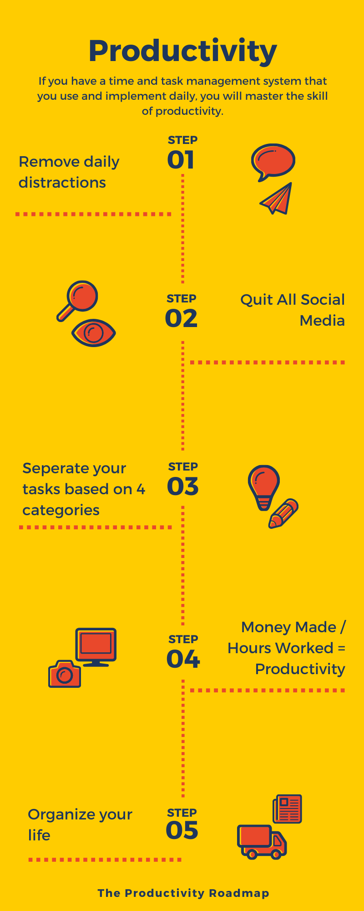
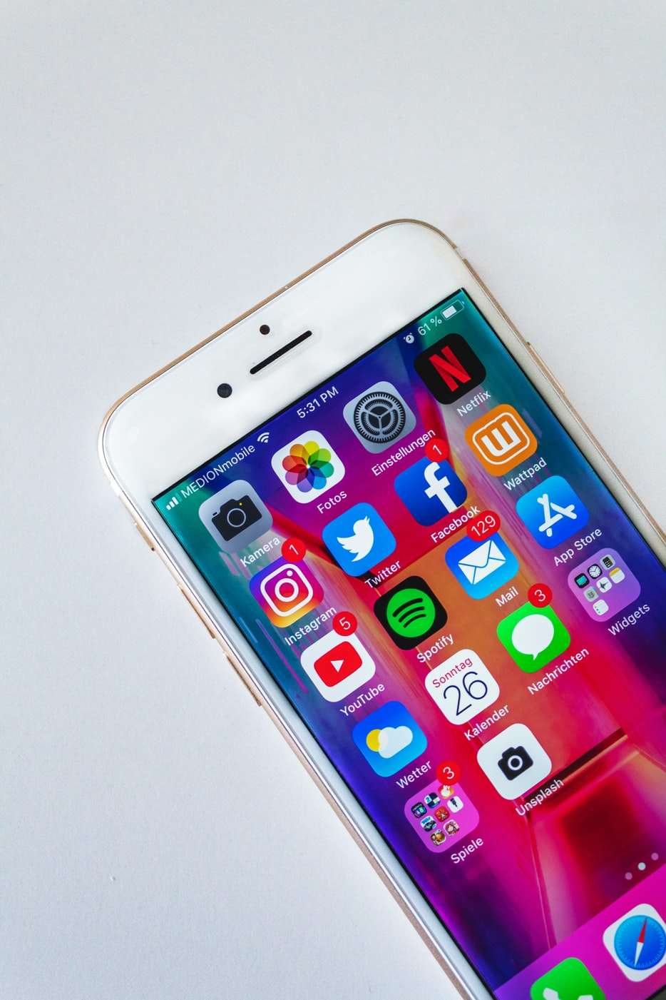
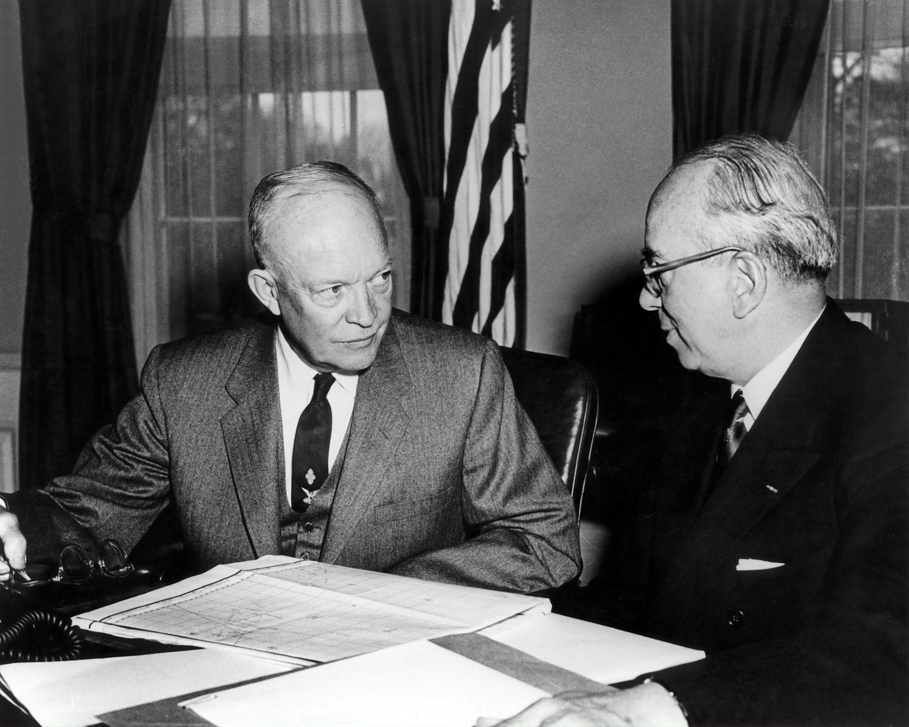
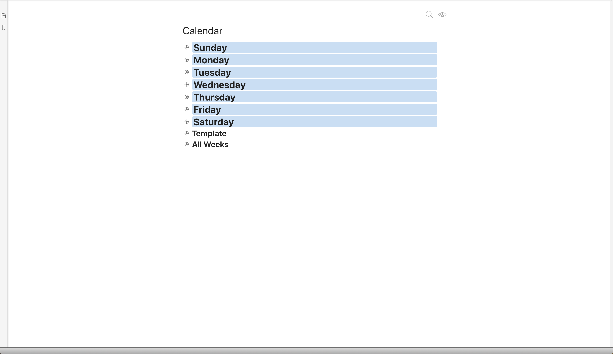
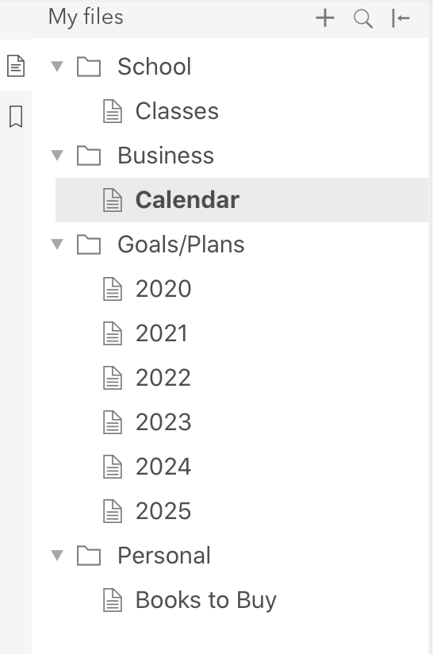

Being productive is something all of us want. It's very easy to do unproductive things, everyday. However, if you have a time and task management system that you use and implement daily, you will master the skill of productivity.
This is the ultimate guide to being productive, day-in and day-out, getting more done, accomplishing your goals, staying organized, and more.
Let's dive right in!
First, you must remove the distractions that interrupt your work and focus on a constant basis. This includes time-wasting apps on your cell phone, video games, shows, and web-surfing.
Once you uninstall social media and game apps on your cell phone, and block distracting sites on your computer, you'll have more time to work on your goals. Not only that, you'll also be able to have a clear mind with less dopamine from the random apps you always use.
It's very common to be addicted to social media. It wouldn't be very useful to explain why social media is addicting; however, what you must do is just simply uninstall ALL social media apps from your cell phone. Once you've done that, you should also keep your cell phone on silent mode while you're working.
In this case, don't keep your phone on silent mode, but still remove the addicting social media apps. This will not only help you focus and get more productive work done, you'll also feel less stressed during your work because you won't receive as many notifications from the different social medias you used before.
There are many benefits of quitting social media. Research revealed valid reasons why you should toss aside your social media networks.
Our happiness and mood are the most important aspects of our lives we must keep in tune. If you're not productive, you must stop and think, What am I doing wrong?
One thing you could be doing wrong is using social media way too often. We all know that billions of people are addicted to social media. As of this writing, there are 3.81 billion social media users around the world, representing 49% of the world's total population.
I was addicted to social media for a year, but then I did something that most teenagers don't do. I deleted all social media. In fact, it was the BEST decision of my life. Getting rid of social media meant that I removed toxic negativity from my life. I had more than a handful of hours back everyday to work on my goals. I also removed the toxic drama from my life. Not only that, but I also gave myself a peaceful mind when I deleted social media.
A month after I deleted social media, I noticed significantly positive changes in all aspects of my life. I could focus on the task I was doing. I could think about and plan my life and goals. I could be productive day-in and day-out.
This is why you must throw away social media from your life. If you have a business and need social media, keep it, but don't have social media on your cell phone (You don't need it on your cell phone). Also, you should remove the feed from your social medias because it distracts you from your goal which is to promote your product or business.
For social comparisons, social media might be making you feel less successful in your career, relationships, and productivity because of how others make their lives seem. When you scroll through social media feeds, you probably see celebrities looking happy and dressed nice, but in reality, celebrities tend to not be the happiest people (for many reasons).
You're also losing sleep. The CDC reported that 35% of Americans don't even get 7 hours of sleep a night. However, when it comes time to actually get ready for bed, people tend to go on their devices that emit blue light that disturbs your sleep. Not only do you lose sleep by using electronics before bed, you also engrave negativity into your mind by scrolling through other people's lives in their feeds.
In short, there are many reasons why you should definitely remove social media from your life. You'll focus better and for longer periods of time, and you'll also have a peace of mind without any negative feeds that you'll have to scroll through every 5 minutes.
Eisenhower was the 34th President of the United States. He had an incredible ability to stay productive for decades. This is why his productivity methods for time and task management have been studied by many people. He's most famous for the Eisenhower Box which is a simple decision-making productivity tool that anyone can implement right now.
Eisenhower's time and task management tool is simple. Simply separate your tasks based on four categories.
"What is important is seldom urgent and what is urgent is seldom important." - Dwight Eisenhower
Separating your urgent and important tasks is a big factor in determining how productive you really are day-to-day
Money Made / Hours Worked = Productivity
For example, if you made $100 and worked 5 hours, it's fair to say that you made $20 every hour you worked. To increase your productivity, simply decrease the amount of hours you work. This can be achieved by removing all distractions, getting in the flow state zone, and working fast and efficiently.
To work efficiently, know what you'll have to do before you do it. Then allocate a fixed time period, also known as a timebox, where planned activity takes place. This technique helps you work in chunks, focus more, and work more efficiently to get your work done faster.
A common workplace issue is that workers don't actually work 9–5. Most of the time, people take a long coffee break, and then surf the web for another 1–2 hours. In reality, those who actually work in a focused and effective manner really do achieve the most.
You also have to have a reason to work hard and efficiently. Is it to make more money? Or is it to start a company? Whatever the reason is, you must work fast and efficiently to get more done in less time.
Always remember that the money made / hours worked = productivity.
Using a todo list is one of the best ways to stay productive. You will know exactly what needs to be done, and won't have to use your brain power to remember future tasks. The day I started using a todo list, my life completely changed.
I started organizing my days, weeks, months, and years! I knew exactly what needed to be done that day, and what my plans are for the rest of the week. Dynalist is what I use and have been using ever since I was introduced to a todo list.
It's a very simple todo list that is "featureful yet simple". You can create folders filled with documents. Dynalist documents are full of bulleted lists that organize your days, weeks, months, and even years. The best part, it's fully customizable. This means that you can write about whatever you want, without Dynalist telling you that you need to have it written a certain way.
You can also sync other productivity apps with Dynalist to enhance your overall productivity. I'm not affiliated with Dynalist, I just love their product.
Here's several examples of how you can use Dynalist.
For example, in one Dynalist document, I have my entire week planned out of what I need to do. Here's how it would look like in Dynalist.
On the bottom, I have a template of how my week would usually look like, and then below that, I have a list of all of the weeks this year I've went through. As of this writing, I'm in "Week 18" (2020 is going by fast).
On the left side of the application, there is a sidebar that can be filled with folders and documents that organize your goals, future tasks, and projects. Here's how my Dynalist sidebar is structured.
Since I'm still in school, I have a folder "School" with a document "Classes" filled with the classes I'm taking now. Below that, I have my favorite and most important folder, "Business" with a document "Calendar" inside. The "Calendar" document is where I keep track of my daily and weekly tasks.
Because I'm a minimalist, I don't use all of Dynalist's features. However, a great example of all the features Dynalist has is shown here.
Using Dynalist to plan your yearly goals is easy. Simply make a folder called "Goals/Plans" and inside that folder, make new documents each named a certain year in the future. In the image above, you can see how I have it structured. Inside each year, I have a list of the projects I will work on, fitness goals, and reading goals I WILL accomplish that year.
This brings me to my next piece of productivity advice.
If you don't plan your future and set your goals, you won't know where you want to be and where you are now. By planning years ahead, you know what you want out of life. It doesn't matter what age you are.
According to Forbes, "We found that if you want the largest increase in motivation and productivity," says Latham, "then big goals lead to the best outcomes. Big goals significantly outperform small goals, medium-sized goals, and vague goals."
This shows how setting big goals helps you produce big results. Setting big goals is better than setting small, medium-sized, and vague goals. You must know what you want out of life, plan your goals, and achieve them.
Let's say you're about to write a book. You're probably overwhelmed by the amount of work you'll have to put in to make this book a success. It could even take years of full-time writing until your book is good enough to be a best seller. When you have a large task that must be completed, break it up into many smaller tasks.
For example, let's say you're writing a book titled "Web Development: Everything You Need To Know". You would first break up the book into chapters.
Chapter 1: The Fundamentals (HTML, CSS, & Vanilla JS)
Chapter 2: Front-End Web Development
Chapter 3: Building Applications
Chapter 4: Front-end Web Developer Tools
Chapter 5: Back-end Web Development
Then, you would only write the 1st chapter. Let's say it took you 1 week to write the 1st chapter. Once you finished the 1st, you would then take a day off to recover from your hard work, and then you would begin the 2nd chapter.
The process repeats.
The key thing in this productivity process is that instead of being overwhelmed by the large task of writing an entire book, you only focus on writing 1 chapter at a time.
This will definitely help you feel less stressed when working on big projects, resulting in being more productive during your work sessions.
Working hard is what seems to be the #1 ingredient to success. However, what if you're working too hard? Is that even possible? Yes, it is. To be more productive, you should work hard, and play hard.
If you just finished a difficult project for a client, you should go do something that makes you feel good. This can be a walk in the park, going to the gym, or getting a chocolate chip cookie.
Whatever you do, just remember to work hard, but also reward yourself for the productive work you produced.
Having a structured daily routine will significantly increase your productivity, and your overall success in life. I believe a structured daily routine has a morning routine, work routine, and a rest routine. Here's a handful of tips that will get you started on building an AWESOME daily routine.
To have a structured daily routine, you'll need to start off by building an incredible morning routine. First, choose a time to wake up that fits well with your work schedule and gives you enough time to go through your morning routine without being in a rush.
For example, I experimented waking up at 5:00am for 1 week, and I hated it. Not only that, but there's no reason why I need to wake up that early. The same applies to you, if there isn't a reason why you should wake up at a certain time, don't wake up at that time.
If waking up at 8:00am works for your schedule, then by all means, do it. The main thing is that you set a time to wake up everyday, and do it. Personally, I experimented for a handful of years waking up at different times, but to be honest, my days are more productive when I don't have an alarm.
Of course, this is the freedom I have from working from home, but it works great for me. As of me writing this, it has been my 1st week without any alarms, and it's been GREAT.
Next, you'll want to do something refreshing in the morning. This can be taking a shower, or drinking tea. Pick something refreshing in the morning, and do it. Just make sure that it's not filled with sugar because if it does, expect to have a rough day full of mood swings and sugar crashes.
Drinking water is also a great and refreshing thing to do in the morning. According to a study by Thrive Global, there are 5 amazing health benefits of drinking water in the morning.
Once you've done something refreshing to wake you up naturally, it's time to go to work. You might work at home, and that's fine. However, to be more productive, you should have a dedicated work environment free of outside distractions. This includes noises, cell phone, and television (which I'll talk more about in a minute).
You also should make sure your working (and living) environment is clean and free of dust. To ensure your work and living environment is clean, I reviewed cleaning products so you can take the guesswork out of picking the best.
Now that you have a solid morning routine, it's now time to build your work routine. Don't worry, it's easier than it sounds. First, you must work in chunks.
Imagine not taking any breaks, ever. Your mental and physical health wouldn't be close to its best, and you would feel burned out. The opposite is true when you work in chunks and take breaks often. This is also known as the Pomodoro Technique, which is a time management method developed by Francesco Cirillo in the late 1980s.
First, choose a task you'd like to get done. It can be big, small, or something you've been not wanting to do for a long time. What matters is that the task is something that deserves your full and undivided attention.
Second, set a timer for 25 minutes, and work, work, work…until the timer is over. Then, take a short break doing something non work-related (meditate, breathe, go for a short walk).
Personally, I don't work 9–5. I work in 3–4 hour chunks of focused work where I got a LOT done. I get a lot done in the morning, evening, and late into the night. Just because this works for me doesn't mean it will work for you, but, you can give it a try.
Last but not least, your rest routine. This part of your day is critical to having enough energy for tomorrow. You should give yourself at least 2 hours of time to rest and read books to learn new things, but NOT watch TV. This brings me to my next point.
Did you know that in 2019, estimates suggested that U.S. adults spent an average of 3 hours and 35 minutes watching TV each day, according to a study by statista.com. Just think about that. Out of the 16–17 hours people were awake in 2019, they spent almost 22 percent of their days looking at a screen filled with time-wasting shows that filled distractions and dopamine into their brains.
This is why I don't watch TV, and will never have a TV. It is a complete waste of time, energy, and money. Out of all the things you could be doing (making money, learning, exercising, meeting people, building relationships, achieving your goals), watching TV shouldn't ever be one of them.
If you take my advice and throw away your TV or sell it, your life will significantly change for the better. You'll have much more time (3 hours 35 minutes) to achieve your goals, build relationships, learn, and make money.
This doesn't mean that you should go on Netflix on other devices. The same applies to time-wasting activities on other devices (watching movies online, tv shows on Netflix, or any other time-wasting thing you might be doing on the internet).
It might seem very difficult to not watch any TV or Netflix, but it will make a MASSIVE positive impact on your life once you do it.
You are now a productivity expert. You learned the benefits of quitting social media, Eisenhower's time and task management tool, my simple productivity formula, why setting up and using a todo list is extremely beneficial, how having a structured daily routine is necessary for your productivity, and how not having or watching TV is a great time saver.
Now I'd like to hear from you.
What tip from this productivity guide do you want to try out first?
Are you going to focus on setting up a todo list?
Or maybe you want to make a structured daily routine?
Either way, let me know by leaving a comment, or tweeting at me.